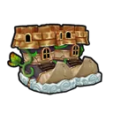

Botas do Gigante
Calçados leves · Tier 10 · Nível 31
Fá-fi-fó-fúm. Sinto o cheiro do sangue de um espadachim.
Atributos
Ataque
55
Defesa
220
Economia
Valor
765.000
Tempo de fabricação
8h 10min
XP do comerciante
60.500
Trabalhadores: Alfaiate 25, Mestre 21, Ferreiro 18
Receita


Marcos do projeto
6
Tempo de fabricação -20%
16
-17 Tecido
28
Valor +25%
45
-61 Couro
70
Chance de qualidade +1